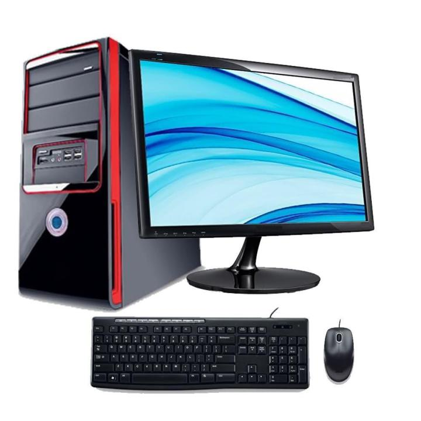
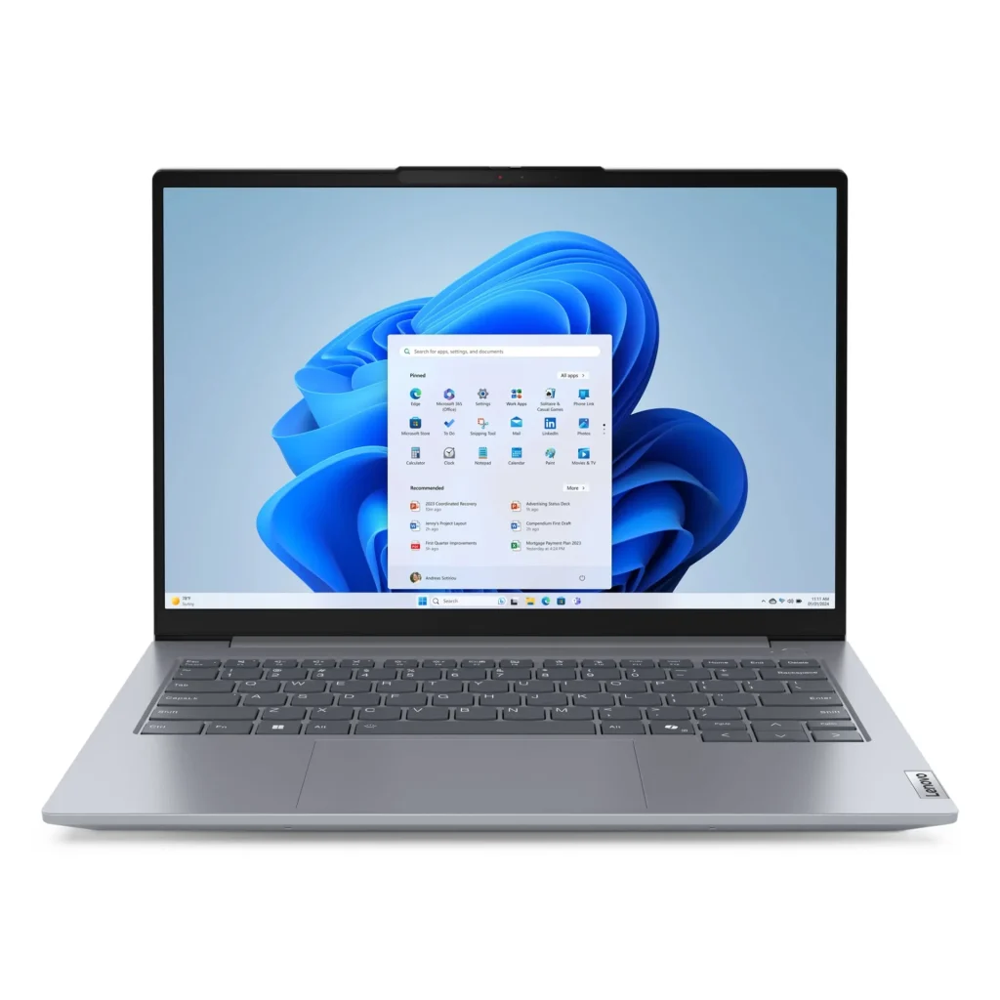
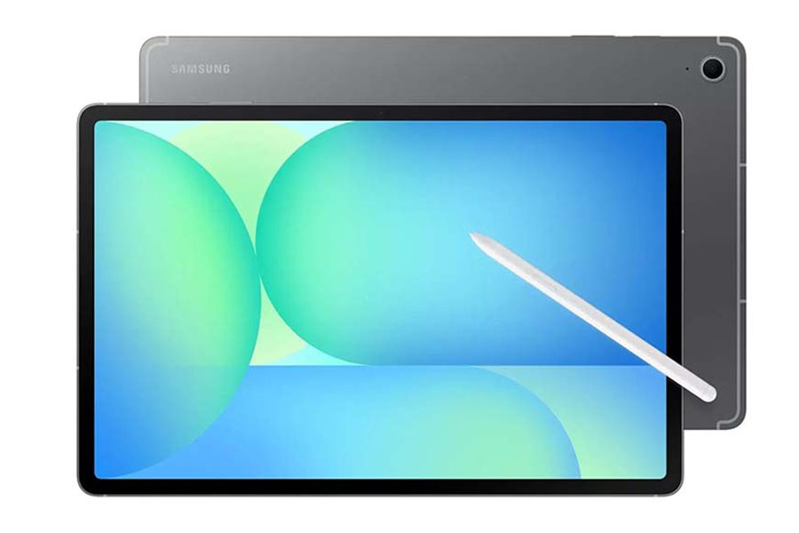
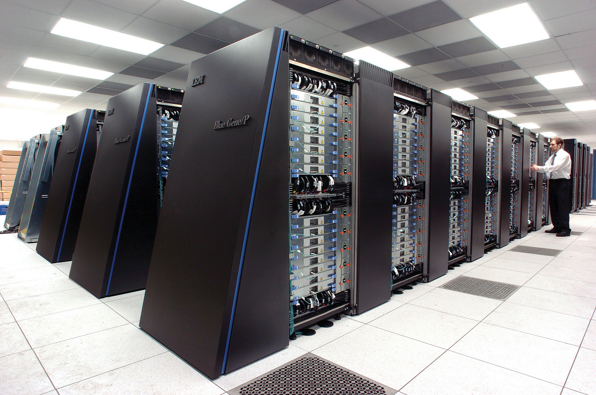
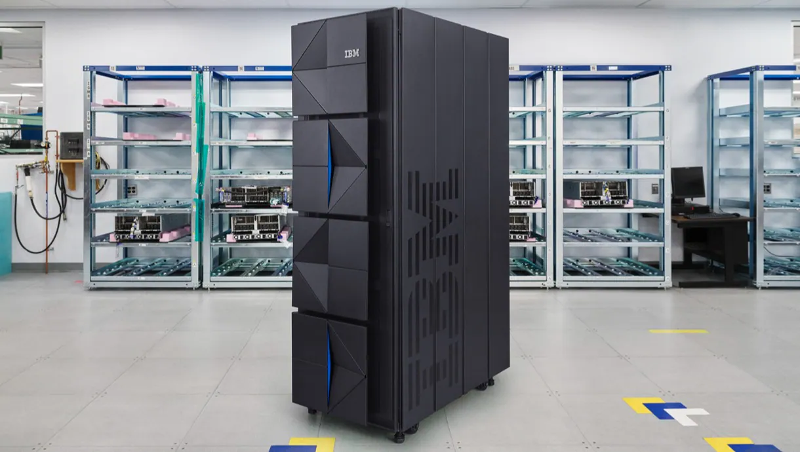

1. Desktop Computer

A desktop computer is designed to stay in one place. It is commonly used at homes, schools and offices.
2. Laptop

A laptop is a portable computer that can be carried from one place to another.
3. Tablet

A tablet is a small portable computer with a touchscreen.
4. Supercomputer

Supercomputers are extremely powerful computers used for complex calculations and scientific research.
5. Mainframe Computer

Mainframe computers can process very large amounts of data and are used by large organizations.